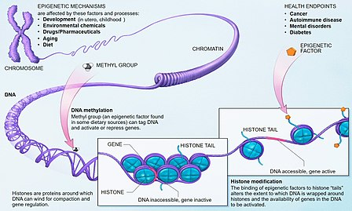

AGING
Causes
Solutions
Causes
1.dielectric fault
-replication errors
-X rays
-UV light
-alkylating agents
-spontaneous reactions
-reactive oxygen species
2.telomere decrease
A telomere (/ˈtɛləmɪər/ or /ˈtɪləmɪər/) is a region of repetitive nucleotide sequences at each end of a chromosome, which protects the end of the chromosome from deterioration or from fusion with neighboring chromosomes. Its name is derived from the Greek nouns telos (τέλος) "end" and merοs (μέρος, root: μερ-) "part". For vertebrates, the sequence of nucleotides in telomeres is AGGGTT, with the complementary DNA strand being TCCCAA, with a single-stranded TTAGGG overhang. This sequence of TTAGGG is repeated approximately 2,500 times in humans. In humans, average telomere length declines from about 11 kilobases at birth to fewer than 4 kilobases in old age, with the average rate of decline being greater in men than in women.
During chromosome replication, the enzymes that duplicate DNA cannot continue their duplication all the way to the end of a chromosome, so in each duplication the end of the chromosome is shortened (this is because the synthesis of Okazaki fragments requires RNA primers attaching ahead on the lagging strand). The telomeres are disposable buffers at the ends of chromosomes which are truncated during cell division; their presence protects the genes before them on the chromosome from being truncated instead. The telomeres themselves are protected by a complex of shelterin proteins, as well as by the RNA that telomeric DNA encodes (TERRA).
Over time, due to each cell division, the telomere ends become shorter. They are replenished by an enzyme, telomerase reverse transcriptase.
3.epigenetics changes

The field of epigenetics is quickly growing and with it the understanding that both the environment and individual lifestyle can also directly interact with the genome to influence epigenetic change. These changes may be reflected at various stages throughout a person’s life and even in later generations. For example, human epidemiological studies have provided evidence that prenatal and early postnatal environmental factors influence the adult risk of developing various chronic diseases and behavioral disorders. Studies have shown that children born during the period of the Dutch famine from 1944-1945 have increased rates of coronary heart disease and obesity after maternal exposure to famine during early pregnancy compared to those not exposed to famine. Less DNA methylation of the insulin-like growth factor II (IGF2) gene, a well-characterized epigenetic locus, was found to be associated with this exposure. Likewise, adults that were prenatally exposed to famine conditions have also been reported to have significantly higher incidence of schizophrenia.
Research has also shown that a mother’s exposure to pollution could impact her child’s asthma susceptibility and her intake of vitamin D could change DNA methylation that influences placenta functioning. It doesn’t stop at the mother, however, as further studies support that the father has a hand in his child’s health and epigenetic marks as well. Read: A Child’s Mental Fitness Could Be Epigenetically Influenced by Dad’s Diet.
4.losing protein balance
A protein is considered to be misfolded if it cannot achieve its normal native state. This can be due to mutations in the amino acid sequence or a disruption of the normal folding process by external factors. The misfolded protein typically contains β-sheets that are organized in a supramolecular arrangement known as a cross-β structure. These β-sheet-rich assemblies are very stable, very insoluble, and generally resistant to proteolysis. The structural stability of these fibrillar assemblies is caused by extensive interactions between the protein monomers, formed by backbone hydrogen bonds between their β-strands. The misfolding of proteins can trigger the further misfolding and accumulation of other proteins into aggregates or oligomers. The increased levels of aggregated proteins in the cell leads to formation of amyloid-like structures which can cause degenerative disorders and cell death. The amyloids are fibrillary structures that contain intermolecular hydrogen bonds which are highly insoluble and made from converted protein aggregates. Therefore, the proteasome pathway may not be efficient enough to degrade the misfolded proteins prior to aggregation. Misfolded proteins can interact with one another and form structured aggregates and gain toxicity through intermolecular interactions.
Aggregated proteins are associated with prion-related illnesses such as Creutzfeldt–Jakob disease, bovine spongiform encephalopathy (mad cow disease), amyloid-related illnesses such as Alzheimer's disease and familial amyloid cardiomyopathy or polyneuropathy, as well as intracellular aggregation diseases such as Huntington's and Parkinson's disease. These age onset degenerative diseases are associated with the aggregation of misfolded proteins into insoluble, extracellular aggregates and/or intracellular inclusions including cross-β amyloid fibrils. It is not completely clear whether the aggregates are the cause or merely a reflection of the loss of protein homeostasis, the balance between synthesis, folding, aggregation and protein turnover. Recently the European Medicines Agency approved the use of Tafamidis or Vyndaqel (a kinetic stabilizer of tetrameric transthyretin) for the treatment of transthyretin amyloid diseases. This suggests that the process of amyloid fibril formation (and not the fibrils themselves) causes the degeneration of post-mitotic tissue in human amyloid diseases. Misfolding and excessive degradation instead of folding and function leads to a number of proteopathy diseases such as antitrypsin-associated emphysema, cystic fibrosis and the lysosomal storage diseases, where loss of function is the origin of the disorder. While protein replacement therapy has historically been used to correct the latter disorders, an emerging approach is to use pharmaceutical chaperones to fold mutated proteins to render them functional.